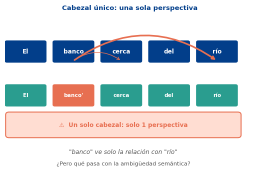
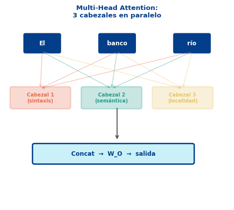
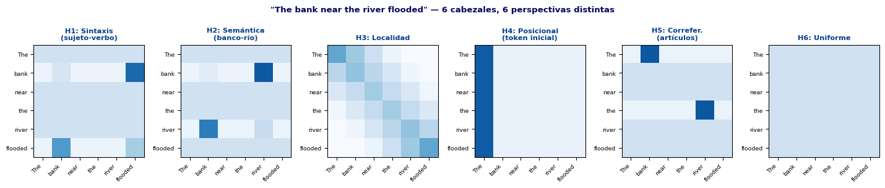
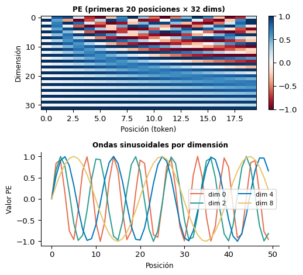
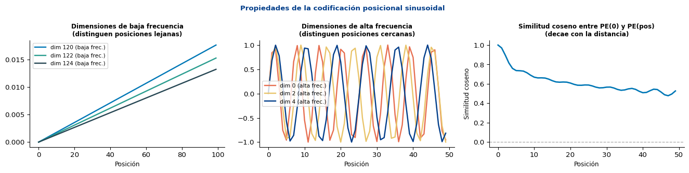
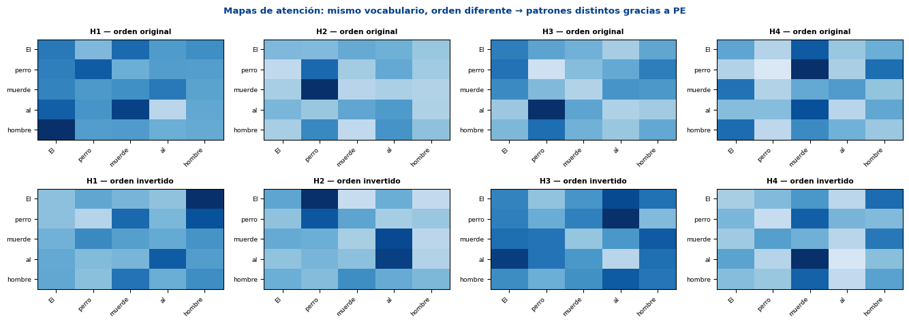

S2: Atención Multi-Cabeza y Codificación Posicional
Universidad Católica Boliviana
2026-04-15
Objetivo
Entender por qué un solo cabezal de atención es insuficiente, cómo Multi-Head Attention captura múltiples tipos de relaciones simultáneamente, y por qué los Transformers necesitan codificación posicional explícita.
Prerequisitos: Scaled Dot-Product Attention (S1)
Un cabezal de atención aprende una proyección \(\mathbf{W}_Q, \mathbf{W}_K, \mathbf{W}_V\) y calcula:
\[\text{Attention}(\mathbf{Q}, \mathbf{K}, \mathbf{V}) = \text{softmax}\!\left(\frac{\mathbf{Q}\mathbf{K}^\top}{\sqrt{d_k}}\right)\mathbf{V}\]
Una sola proyección solo puede capturar un tipo de relación a la vez.
En la oración “El banco cerca del río se inundó”:

Cada cabezal \(i\) aprende sus propias matrices \(\mathbf{W}_Q^{(i)}, \mathbf{W}_K^{(i)}, \mathbf{W}_V^{(i)}\) y puede especializarse en un tipo diferente de relación:
\[\text{head}_i = \text{Attention}(\mathbf{Q}\mathbf{W}_Q^{(i)},\; \mathbf{K}\mathbf{W}_K^{(i)},\; \mathbf{V}\mathbf{W}_V^{(i)})\]
Sus salidas se concatenan y se proyectan:
\[\text{MultiHead}(\mathbf{Q},\mathbf{K},\mathbf{V}) = \text{Concat}(\text{head}_1, \ldots, \text{head}_h)\,\mathbf{W}^O\]
Tip
En Vaswani et al. (2017): \(d_\text{model}=512\), \(h=8\), \(d_k=d_v=64\).

import torch
import torch.nn as nn
import torch.nn.functional as F
class MultiHeadAttention(nn.Module):
"""
Atención multi-cabeza (Vaswani et al., 2017).
d_model: dimensión del modelo
num_heads: número de cabezales h
d_k = d_v = d_model // num_heads
"""
def __init__(self, d_model: int, num_heads: int, dropout: float = 0.0):
super().__init__()
assert d_model % num_heads == 0, "d_model debe ser divisible por num_heads"
self.d_model = d_model
self.num_heads = num_heads
self.d_k = d_model // num_heads # dimensión por cabezal
# Una proyección lineal grande equivale a h proyecciones pequeñas
self.W_Q = nn.Linear(d_model, d_model, bias=False)
self.W_K = nn.Linear(d_model, d_model, bias=False)
self.W_V = nn.Linear(d_model, d_model, bias=False)
self.W_O = nn.Linear(d_model, d_model, bias=False)
self.dropout = nn.Dropout(dropout)
def split_heads(self, x):
"""(B, T, d_model) → (B, h, T, d_k)"""
B, T, _ = x.shape
x = x.view(B, T, self.num_heads, self.d_k)
return x.transpose(1, 2) # (B, h, T, d_k)
def forward(self, x, mask=None):
"""x: (B, T, d_model)"""
B, T, _ = x.shape
# Proyectar y dividir en cabezales
Q = self.split_heads(self.W_Q(x)) # (B, h, T, d_k)
K = self.split_heads(self.W_K(x))
V = self.split_heads(self.W_V(x))
# Atención escalada por cabezal
scores = torch.matmul(Q, K.transpose(-2, -1)) / (self.d_k ** 0.5) # (B, h, T, T)
if mask is not None:
scores = scores.masked_fill(mask == 0, float('-inf'))
attn_weights = F.softmax(scores, dim=-1)
attn_weights = self.dropout(attn_weights)
# Contexto: (B, h, T, d_k)
context = torch.matmul(attn_weights, V)
# Reensamblar cabezales: (B, T, d_model)
context = context.transpose(1, 2).contiguous().view(B, T, self.d_model)
return self.W_O(context), attn_weights
# Prueba
torch.manual_seed(0)
B, T, d_model, h = 2, 10, 64, 8
mha = MultiHeadAttention(d_model=d_model, num_heads=h)
x = torch.randn(B, T, d_model)
out, w = mha(x)
print(f"Entrada: {x.shape}")
print(f"Salida: {out.shape} ← misma forma")
print(f"Pesos MHA: {w.shape} ← (batch, heads, T, T)")
npar = sum(p.numel() for p in mha.parameters())
print(f"Parámetros: {npar:,} (4 matrices de {d_model}x{d_model})")Entrada: torch.Size([2, 10, 64])
Salida: torch.Size([2, 10, 64]) ← misma forma
Pesos MHA: torch.Size([2, 8, 10, 10]) ← (batch, heads, T, T)
Parámetros: 16,384 (4 matrices de 64x64)
Note
Estos patrones son ilustrativos. En modelos reales (BERT), Clark et al. (2019) identificaron cabezales especializados en: tokens directamente anteriores/siguientes, tokens relacionados sintácticamente, el token [SEP], y más.
torch.manual_seed(1)
B, T, d = 1, 5, 32
mha_test = MultiHeadAttention(d_model=d, num_heads=4)
mha_test.eval()
x = torch.randn(B, T, d)
# Salida original
with torch.no_grad():
out_orig, _ = mha_test(x)
# Permutar tokens
perm = torch.tensor([2, 0, 4, 1, 3])
x_perm = x[:, perm, :]
with torch.no_grad():
out_perm, _ = mha_test(x_perm)
# ¿La salida permutada coincide con permutar la salida original?
diff = (out_perm - out_orig[:, perm, :]).abs().max().item()
print(f"Diferencia máxima (out_perm vs out_orig[perm]): {diff:.2e}")
print("→ La MHA no distingue el orden de tokens ⚠️")Diferencia máxima (out_perm vs out_orig[perm]): 5.96e-08
→ La MHA no distingue el orden de tokens ⚠️Por qué esto es un problema
Para MHA, estas dos oraciones son idénticas:
Tienen exactamente los mismos tokens — diferente orden.
El modelo nunca verá la diferencia si no le decimos explícitamente qué posición ocupa cada token.
Solución: añadir un vector de posición a cada embedding antes de la atención:
\[\mathbf{x}_i' = \mathbf{e}_i + \text{PE}(i)\]
\[\text{PE}(pos, 2i) = \sin\!\left(\frac{pos}{10000^{2i/d_\text{model}}}\right)\]
\[\text{PE}(pos, 2i+1) = \cos\!\left(\frac{pos}{10000^{2i/d_\text{model}}}\right)\]

import torch
import torch.nn as nn
import math
class PositionalEncoding(nn.Module):
"""
Codificación posicional sinusoidal (Vaswani et al., 2017).
Suma un vector posicional fijo al embedding de cada token.
"""
def __init__(self, d_model: int, max_len: int = 5000, dropout: float = 0.1):
super().__init__()
self.dropout = nn.Dropout(dropout)
# Matriz PE: (max_len, d_model)
PE = torch.zeros(max_len, d_model)
pos = torch.arange(0, max_len, dtype=torch.float).unsqueeze(1) # (T, 1)
div = torch.exp(
torch.arange(0, d_model, 2, dtype=torch.float) *
(-math.log(10000.0) / d_model)
) # (d_model/2,)
PE[:, 0::2] = torch.sin(pos * div)
PE[:, 1::2] = torch.cos(pos * div)
# Registrar como buffer (no es parámetro aprendible)
self.register_buffer('PE', PE.unsqueeze(0)) # (1, max_len, d_model)
def forward(self, x):
"""x: (B, T, d_model) → suma PE para las primeras T posiciones"""
return self.dropout(x + self.PE[:, :x.size(1)])
# Prueba
torch.manual_seed(0)
d_model = 64
pe = PositionalEncoding(d_model=d_model, dropout=0.0)
x_emb = torch.randn(2, 10, d_model) # (B=2, T=10, d=64)
x_enc = pe(x_emb)
print(f"Embedding sin PE: {x_emb.shape}")
print(f"Embedding con PE: {x_enc.shape} ← mismas dimensiones")
print(f"\nPrimeras 5 dims del PE, posiciones 0-4:")
print(pe.PE[0, :5, :5].numpy().round(3))
print("\n→ Cada fila es única: el modelo puede distinguir posiciones ✅")Embedding sin PE: torch.Size([2, 10, 64])
Embedding con PE: torch.Size([2, 10, 64]) ← mismas dimensiones
Primeras 5 dims del PE, posiciones 0-4:
[[ 0. 1. 0. 1. 0. ]
[ 0.841 0.54 0.682 0.732 0.533]
[ 0.909 -0.416 0.997 0.071 0.902]
[ 0.141 -0.99 0.778 -0.628 0.993]
[-0.757 -0.654 0.142 -0.99 0.778]]
→ Cada fila es única: el modelo puede distinguir posiciones ✅
Tip
La similitud coseno decae con la distancia → el modelo puede inferir que posiciones cercanas son más similares que posiciones lejanas, sin haberlo sido entrenado explícitamente para ello.
Tokens → Embedding → + PE → MHA → Salida contextualizadaFormalmente:
\[\mathbf{X}' = \text{Embedding}(\mathbf{w}) + \text{PE}\] \[\mathbf{Z} = \text{MultiHead}(\mathbf{X}', \mathbf{X}', \mathbf{X}')\]
Note
En el Transformer completo (S3), hay más componentes: - Add & Norm (conexiones residuales + Layer Norm) - Feed-Forward (MLP por token) - Múltiples capas apiladas
Pero MHA + PE son el corazón.
class TransformerInputBlock(nn.Module):
"""
Bloque de entrada: Embedding + PE + Multi-Head Attention.
(Versión simplificada — sin residual ni FFN)
"""
def __init__(self, vocab_size, d_model, num_heads,
max_len=512, dropout=0.1):
super().__init__()
self.embedding = nn.Embedding(vocab_size, d_model, padding_idx=0)
self.pe = PositionalEncoding(d_model, max_len, dropout)
self.mha = MultiHeadAttention(d_model, num_heads, dropout)
def forward(self, x, mask=None):
"""x: (B, T) token ids"""
emb = self.embedding(x) # (B, T, d_model)
emb = self.pe(emb) # + posicional encoding
out, attn = self.mha(emb, mask) # multi-head attention
return out, attn
# Ejemplo
torch.manual_seed(42)
block = TransformerInputBlock(
vocab_size=10000, d_model=64, num_heads=8
)
tokens = torch.randint(1, 10000, (3, 20)) # batch=3, seq_len=20
out, attn = block(tokens)
print(f"Tokens entrada: {tokens.shape}")
print(f"Salida contextual: {out.shape}")
print(f"Pesos atención: {attn.shape} ← (B, heads, T, T)")
npar = sum(p.numel() for p in block.parameters())
print(f"Total parámetros: {npar:,}")Tokens entrada: torch.Size([3, 20])
Salida contextual: torch.Size([3, 20, 64])
Pesos atención: torch.Size([3, 8, 20, 20]) ← (B, heads, T, T)
Total parámetros: 656,384torch.manual_seed(7)
d_model, n_heads = 32, 4
vocab_sz = 500
# Sin PE: solo embedding + MHA
class BlockSinPE(nn.Module):
def __init__(self):
super().__init__()
self.emb = nn.Embedding(vocab_sz, d_model, padding_idx=0)
self.mha = MultiHeadAttention(d_model, n_heads)
def forward(self, x):
e = self.emb(x)
out, _ = self.mha(e)
return out
# Con PE: embedding + PE + MHA
class BlockConPE(nn.Module):
def __init__(self):
super().__init__()
self.emb = nn.Embedding(vocab_sz, d_model, padding_idx=0)
self.pe = PositionalEncoding(d_model, dropout=0.0)
self.mha = MultiHeadAttention(d_model, n_heads)
def forward(self, x):
e = self.pe(self.emb(x))
out, _ = self.mha(e)
return out
# Oración y su versión permutada
frase = torch.tensor([[10, 25, 87, 43, 62, 91, 15, 37]]) # (1, 8)
perm_idx = torch.tensor([3, 0, 6, 1, 7, 4, 2, 5])
frase_p = frase[:, perm_idx]
blk_sin = BlockSinPE(); blk_sin.eval()
blk_con = BlockConPE(); blk_con.eval()
with torch.no_grad():
out_sin_orig = blk_sin(frase)
out_sin_perm = blk_sin(frase_p)
out_con_orig = blk_con(frase)
out_con_perm = blk_con(frase_p)
diff_sin = (out_sin_perm - out_sin_orig[:, perm_idx]).abs().mean().item()
diff_con = (out_con_perm - out_con_orig[:, perm_idx]).abs().mean().item()
print("Sin PE — diferencia media entre original y permutado:", f"{diff_sin:.2e}")
print("Con PE — diferencia media entre original y permutado:", f"{diff_con:.2e}")
print()
print("→ Sin PE: permutación NO cambia la salida (invariante al orden)")
print("→ Con PE: permutación SÍ cambia la salida (sensible al orden) ✅")Sin PE — diferencia media entre original y permutado: 1.41e-08
Con PE — diferencia media entre original y permutado: 3.19e-02
→ Sin PE: permutación NO cambia la salida (invariante al orden)
→ Con PE: permutación SÍ cambia la salida (sensible al orden) ✅
\[\text{MultiHead}(Q,K,V) = \text{Concat}(\text{head}_1,\ldots,\text{head}_h)\mathbf{W}^O\]
\[\text{PE}(pos, 2i) = \sin\!\left(\frac{pos}{10000^{2i/d}}\right)\!, \quad \text{PE}(pos, 2i+1) = \cos(\cdots)\]
| Componente | Descripción | ¿Visto? |
|---|---|---|
| Scaled Dot-Product Attention | Q·K·V | ✅ S1 |
| Multi-Head Attention | \(h\) cabezales | ✅ Hoy |
| Positional Encoding | PE sinusoidal | ✅ Hoy |
| Add & Norm | Residual + LayerNorm | ❌ S3 |
| Feed-Forward | MLP por token | ❌ S3 |
| Stacking | \(N\) bloques apilados | ❌ S3 |
→ La próxima sesión completa el Transformer.
Note
Ya tenemos todos los componentes de atención. La sesión S3 añade los elementos que hacen el entrenamiento estable y profundo:
Input Tokens
↓
Embedding + PE
↓
┌─────────────────┐ ×N
│ Multi-Head SA │
│ Add & Norm │
│ Feed-Forward │
│ Add & Norm │
└─────────────────┘
↓
Output (encoder)¡Gracias!
📧 fsuarez@ucb.edu.bo
🔗 Materiales: github.com/fjsuarez/ucb-nlp
NLP y Análisis Semántico | Semana 9